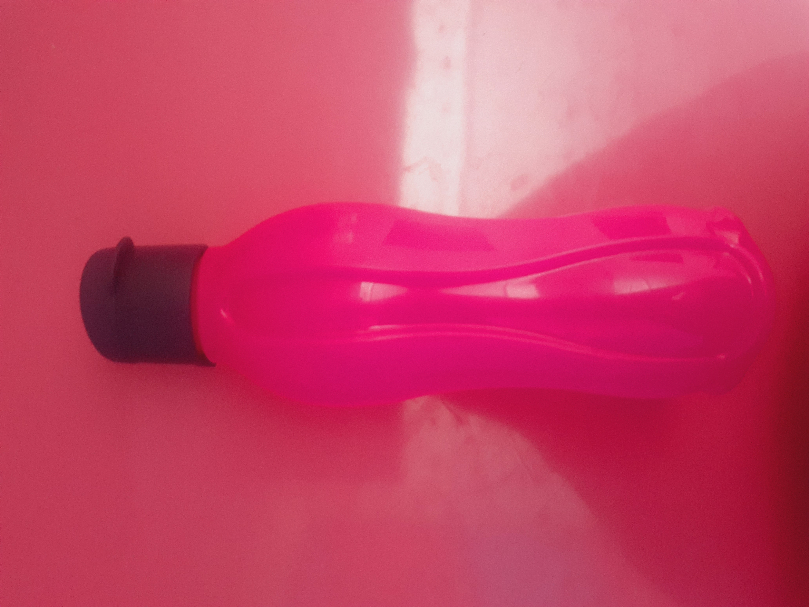
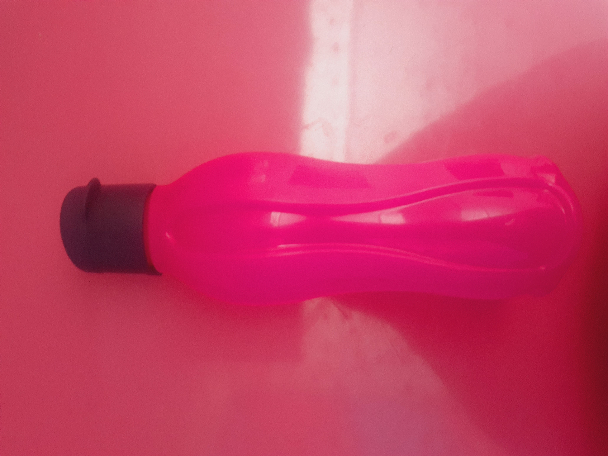
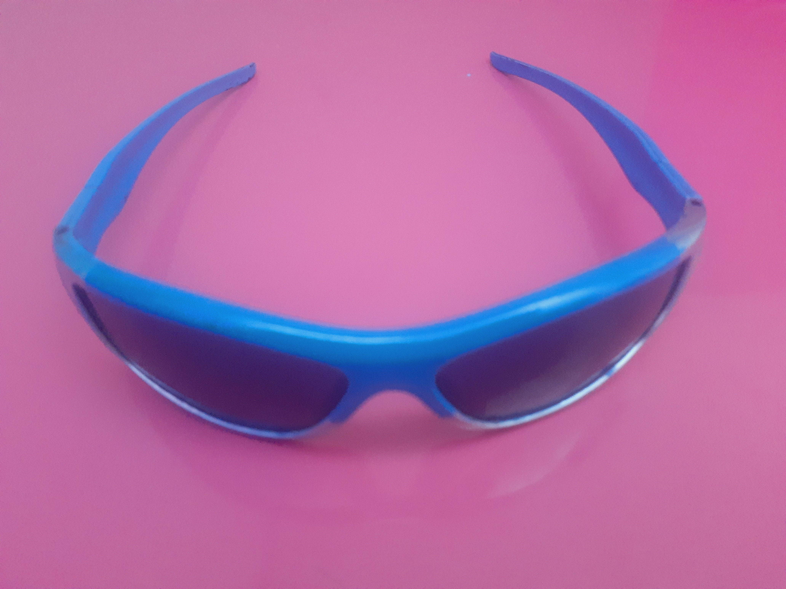
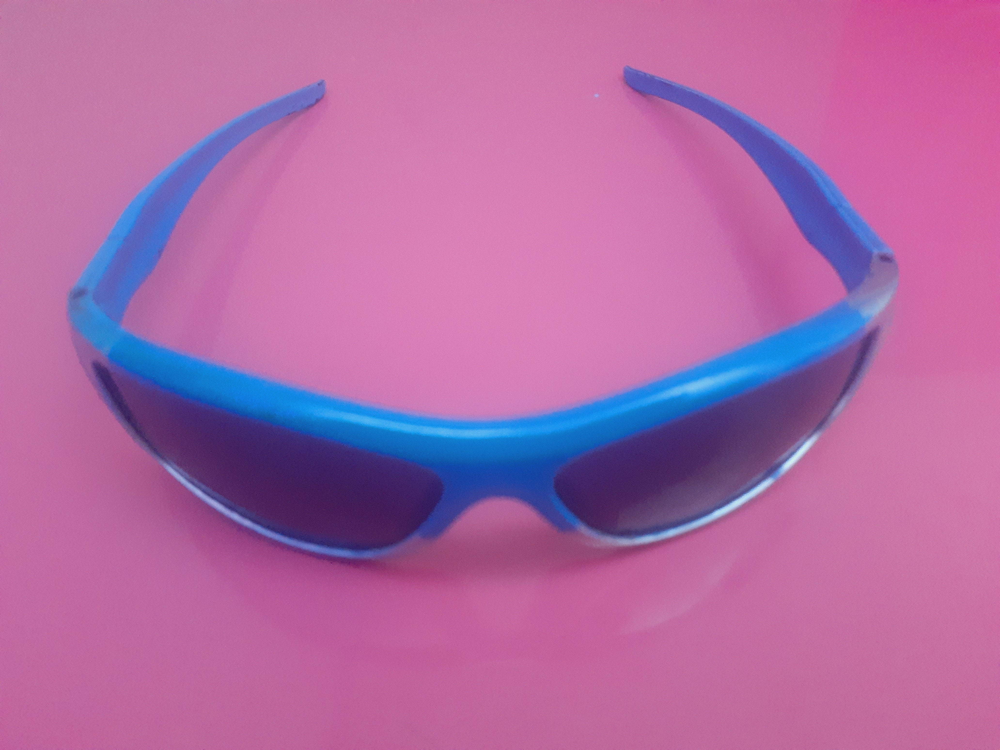
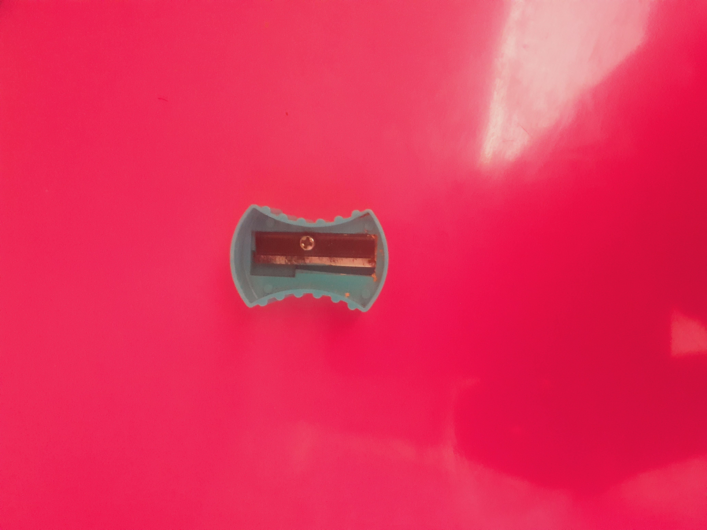
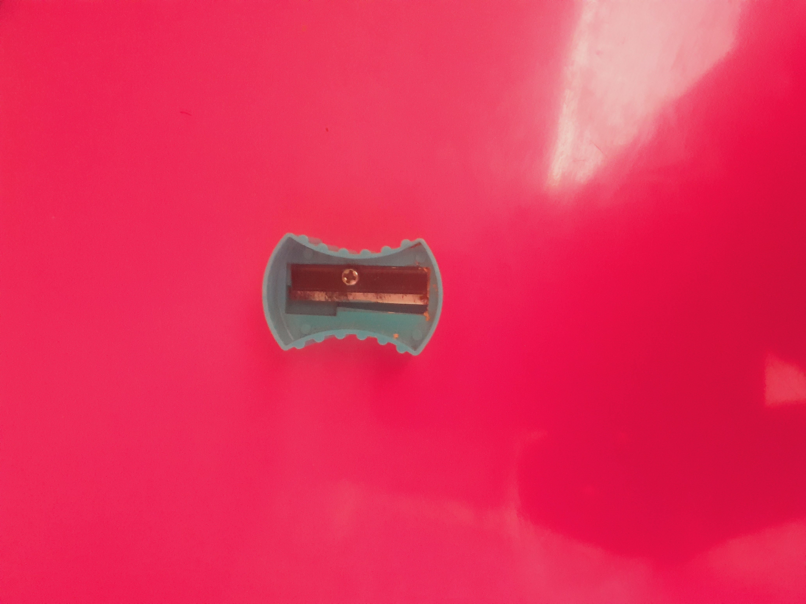
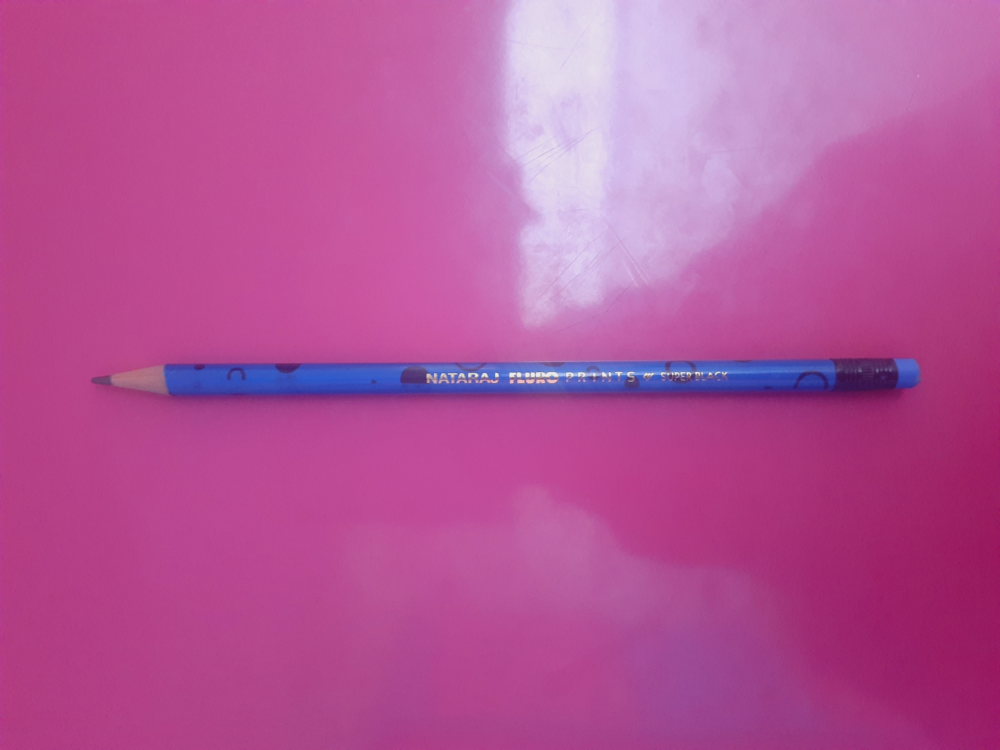
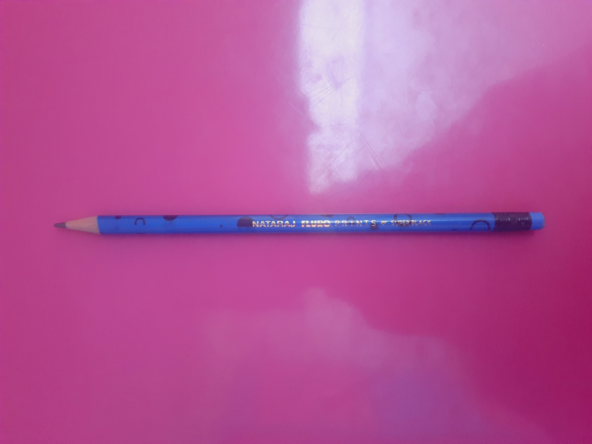
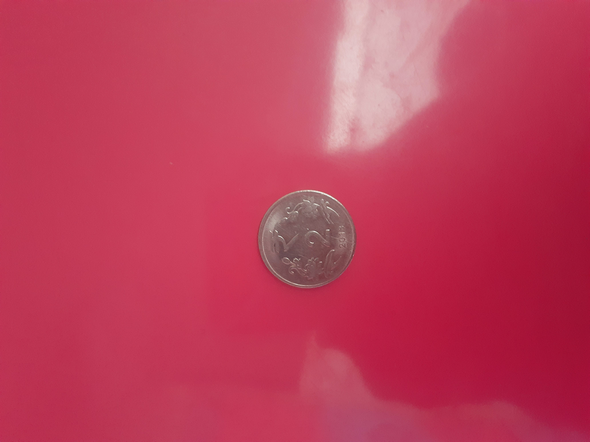
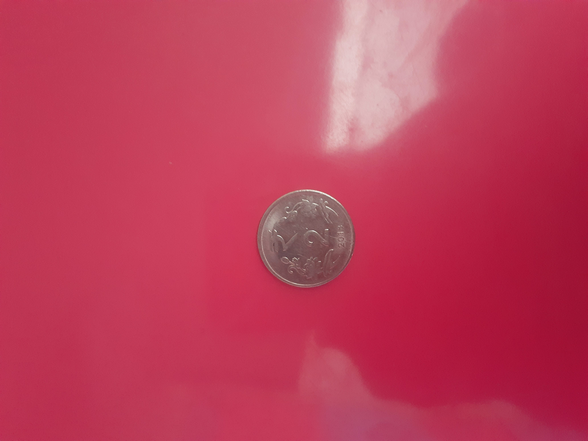

Case Study

1.
Test Image-
Test Image-
Output on Microsoft Azure- Mallet
Output on Mobilenet Model- Waterbottle
Result-
MobileNet Model is More Accurate as it shows the correct answer.
2.
Test Image-
Test Image-
Output on Microsoft Azure- Monocle
Output on Mobilenet Model- Sunglasses
Result-
MobileNet Model is More Accurate as it shows the correct answer.
3.
Test Image-
Test Image-
Output on Microsoft Azure- Combination Lock
Output on Mobilenet Model- WaterBottle
Result-
None of them are correct but Combination Lock is a little more similar to a sharpener than a Waterbottle so Microsoft Azure.
4.
Test Image-
Test Image-
Output on Microsoft Azure- Pencil
Output on Mobilenet Model- Syringe
Result-
Microsoft Azure is more accurate as Pencil is the right answer.
5.
Test Image-
Test Image-
Output on Microsoft Azure- Case
Output on Mobilenet Model- Shower Curtain
Result-
None of them are correct but Microsoft Azure is more acurate as a case is more similar to a notebook than a Shower Curtain
6.
Test Image-
Test Image-
Output on Microsoft Azure- Marker
Output on Mobilenet Model- Lipstick
Result-
Microsoft Azure is more accurate because a highliter is a type of marker but highligter and lipstick are two completely different things.
7.
Test Image-
Test Image-
Output on Microsoft Azure- Binoculars
Output on Mobilenet Model- Stethescope
Result-
None of them are correct but Stethescope is a little bit more accurate than Binoculars so Mobilenet.
8.
Test Image-
Test Image-
Output on Microsoft Azure- Switch
Output on Mobilenet Model- Remote
Result-
None of them are correct but Microsoft Azure is a bit more accurate.
9.
Test Image-
Test Image-
Output on Microsoft Azure- Nail
Output on Mobilenet Model- Racket
Result-
None of them are correct but a Nail is Closer to a coin so Microsoft Azure.
10.
Test Image-
Test Image-